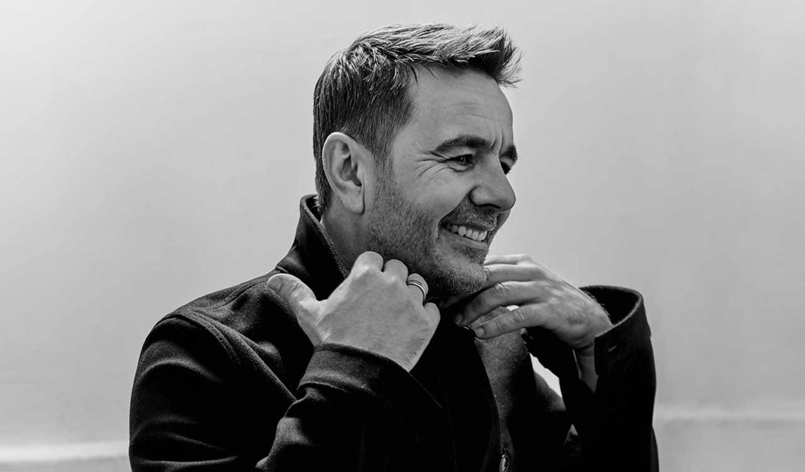

Tribute to Laurent Garnier

Laurent Garnier Barcelona - Sonar Festival 2018
One of the pioneering DJs of the dance music scene, Laurent Garnier experienced first-hand the euphoria of the acid-house movement in Manchester.
He then went on to Wake Up and shake up Paris nightlife, from La Luna to the Palace, not forgetting the Rex Club.
As one of the leading lights in French dance music at the end of the 1980's, he then spread his message across the planet, from raves to warehouse parties, clubs to festivals.